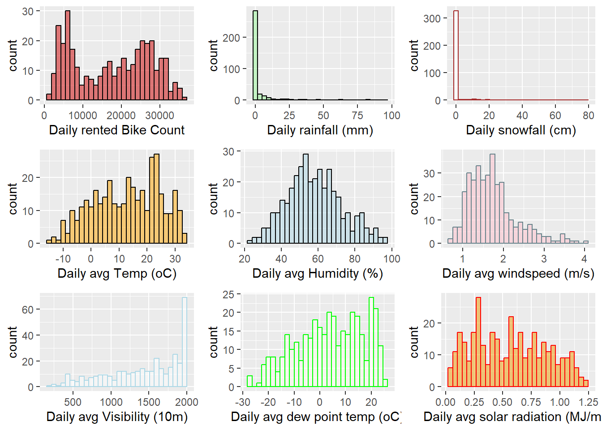

Today we are using a bike share data for the basic modeling practise. The introoduction of this data set is accessed through this website: (Seoul Bike Sharing Demand - UCI Machine Learning Repository). To our relieve there is no missing values.
The aim of the project is to predict the rental bike count at each hour of a day based on the weather condition, season, holiday and the hour. Since bike usage is sensitive to weather condition it is presumable that certain weather condition, plus the day condition (weekday/weekend, holiday, etc.) is likely to dictate the bike usage in a particular time of the day.
Let’s load some packages and read in the data first:
library (tidyverse)
Warning: package 'ggplot2' was built under R version 4.3.3
Warning: package 'tidyr' was built under R version 4.3.3
Warning: package 'readr' was built under R version 4.3.3
Warning: package 'dplyr' was built under R version 4.3.3
Warning: package 'stringr' was built under R version 4.3.3
Warning: package 'lubridate' was built under R version 4.3.3
── Attaching core tidyverse packages ──────────────────────── tidyverse 2.0.0 ──
✔ dplyr 1.1.4 ✔ readr 2.1.5
✔ forcats 1.0.0 ✔ stringr 1.5.1
✔ ggplot2 3.5.1 ✔ tibble 3.2.1
✔ lubridate 1.9.3 ✔ tidyr 1.3.1
✔ purrr 1.0.2
── Conflicts ────────────────────────────────────────── tidyverse_conflicts() ──
✖ dplyr::filter() masks stats::filter()
✖ dplyr::lag() masks stats::lag()
ℹ Use the conflicted package (<http://conflicted.r-lib.org/>) to force all conflicts to become errors
Rows: 8760 Columns: 14
── Column specification ────────────────────────────────────────────────────────
Delimiter: ","
chr (4): Date, Seasons, Holiday, Functioning Day
dbl (10): Rented Bike Count, Hour, Temperature(C), Humidity(%), Wind speed (...
ℹ Use `spec()` to retrieve the full column specification for this data.
ℹ Specify the column types or set `show_col_types = FALSE` to quiet this message.
Unexpectedly the first trial to read in data failed. It turned out the file contains some special character that the R does not understand/not encoded by the R-recognizable way.
Data Cleaning
After changing the format manually everything is fine. We first transform the date to the date format
Bikeshare$Date <-as.Date (Bikeshare$Date, format ="%d/%m/%Y")
Now the date are in the right form and can do some visualization around the time data, which we will work on that later. Missing values are creating a headache for exploratory data analysis, so we want to check for missingness, evaluate and take measures to eliminate the missing values.
colSums(is.na(Bikeshare))
Date Rented Bike Count Hour
0 0 0
Temperature(C) Humidity(%) Wind speed (m/s)
0 0 0
Visibility (10m) Dew point temperature(C) Solar Radiation (MJ/m2)
0 0 0
Rainfall(mm) Snowfall (cm) Seasons
0 0 0
Holiday Functioning Day
0 0
length(unique(Bikeshare$Seasons))
[1] 4
Luckily for us, there is no missing data in the data set. To check for the number of unique values in each character column, use the command table(), and if everything is right turn the character variables into factors.
We filtered the data so that all days recorded were “functional day” and factorized variables “Seasons” and “Holiday”. Since we wanted to summarize across the hours to simplify the data (thus eliminating the need to adjust for the hour variable), we will hereby factorize date as well.
Let’s first do summary over some variables. We already counted the number of each unique factors of the categorical variables, we could summarize them as below. First let’s take a look at the variables of the modified data set
For the variable “Rented Bike Count”, “Rainfall (mm)”, “Snowfall (cm)”, we would like to get summary data based on the summed value in a day (added up all the hour data). For other weather-related data, we would like to get a summary of the mean across all the hours in a day.
Date Rented Bike Count_Daily Rainfall(mm)_Daily
Min. :2017-12-01 Min. : 977 Min. : 0.000
1st Qu.:2018-02-27 1st Qu.: 6967 1st Qu.: 0.000
Median :2018-05-28 Median :18563 Median : 0.000
Mean :2018-05-28 Mean :17485 Mean : 3.576
3rd Qu.:2018-08-24 3rd Qu.:26285 3rd Qu.: 0.500
Max. :2018-11-30 Max. :36149 Max. :95.500
Snowfall (cm)_Daily
Min. : 0.000
1st Qu.: 0.000
Median : 0.000
Mean : 1.863
3rd Qu.: 0.000
Max. :78.700
Date Temperature(C)_Daily Humidity(%)_Daily
Min. :2017-12-01 Min. :-14.738 Min. :22.25
1st Qu.:2018-02-27 1st Qu.: 3.304 1st Qu.:47.58
Median :2018-05-28 Median : 13.738 Median :57.17
Mean :2018-05-28 Mean : 12.776 Mean :58.17
3rd Qu.:2018-08-24 3rd Qu.: 22.592 3rd Qu.:67.71
Max. :2018-11-30 Max. : 33.742 Max. :95.88
Wind speed (m/s)_Daily Visibility (10m)_Daily Dew point temperature(C)_Daily
Min. :0.6625 Min. : 214.3 Min. :-27.750
1st Qu.:1.3042 1st Qu.:1087.0 1st Qu.: -5.188
Median :1.6583 Median :1557.8 Median : 4.612
Mean :1.7261 Mean :1434.0 Mean : 3.954
3rd Qu.:1.9542 3rd Qu.:1874.3 3rd Qu.: 14.921
Max. :4.0000 Max. :2000.0 Max. : 25.038
Solar Radiation (MJ/m2)_Daily
Min. :0.02917
1st Qu.:0.28333
Median :0.56500
Mean :0.56773
3rd Qu.:0.82000
Max. :1.21667
`stat_bin()` using `bins = 30`. Pick better value with `binwidth`.
`stat_bin()` using `bins = 30`. Pick better value with `binwidth`.
Warning: Use of `` Bikesharenew$`Snowfall (cm)_Daily` `` is discouraged.
ℹ Use `Snowfall (cm)_Daily` instead.
`stat_bin()` using `bins = 30`. Pick better value with `binwidth`.
Warning: Use of `` Bikesharenew$`Temperature(C)_Daily` `` is discouraged.
ℹ Use `Temperature(C)_Daily` instead.
`stat_bin()` using `bins = 30`. Pick better value with `binwidth`.
Warning: Use of `` Bikesharenew$`Humidity(%)_Daily` `` is discouraged.
ℹ Use `Humidity(%)_Daily` instead.
`stat_bin()` using `bins = 30`. Pick better value with `binwidth`.
Warning: Use of `` Bikesharenew$`Wind speed (m/s)_Daily` `` is discouraged.
ℹ Use `Wind speed (m/s)_Daily` instead.
`stat_bin()` using `bins = 30`. Pick better value with `binwidth`.
Warning: Use of `` Bikesharenew$`Visibility (10m)_Daily` `` is discouraged.
ℹ Use `Visibility (10m)_Daily` instead.
`stat_bin()` using `bins = 30`. Pick better value with `binwidth`.
Warning: Use of `` Bikesharenew$`Dew point temperature(C)_Daily` `` is discouraged.
ℹ Use `Dew point temperature(C)_Daily` instead.
`stat_bin()` using `bins = 30`. Pick better value with `binwidth`.
Warning: Use of `` Bikesharenew$`Solar Radiation (MJ/m2)_Daily` `` is discouraged.
ℹ Use `Solar Radiation (MJ/m2)_Daily` instead.
`stat_bin()` using `bins = 30`. Pick better value with `binwidth`.

It is interesting to see the rough bi-modal distribution of rented bike count. neither mean nor median fall on either peak. Probably it is just good and bad weather conditions that is driving this division.
In order to assist data modeling, not only we are interested in which variable contributes the most to the changes of bike rental count, but also we wanted to figure out the correlation among different predictors. Thus we would use corr plot to visualize the relationship
library (corrplot)
Warning: package 'corrplot' was built under R version 4.3.3
From this correlation plot it is easy to see the daily number of checked out bike is highly positively correlated with the daily temperature, dewpoint and solar radiation. However since both dewpoint and solar radiation are highly correlated with the temperature themselves, we will wait to see whether we should include them all. On the contrary, daily rainfall, snowfall or windspeed is negatively associated with bike count. But remember the distribution of those three variable is far from normal distribution, so maybe it would help to transform the three variables into categorical variables to better model the bike rental count.
Split the data
Now we could model our data Bikesharenew. First let’s split them using seasons to stratify. However we missed the categorical variables in the original data set. Let’s fix this first!
Now let’s create three different recipe, with the first recipe only considering simple linear regression model. Use the recipe () and bake () to see if it works.
There was an error saying the degree of the polynomial needs to be smaller than the unique number of a variable, but according to my observation all numeric variable has more than two unique values. This I do not understand, but I manually chose some anyway.
# A tibble: 6 × 6
.metric .estimator mean n std_err .config
<chr> <chr> <dbl> <int> <dbl> <chr>
1 rmse standard 4119. 10 220. Preprocessor1_Model1
2 rsq standard 0.834 10 0.0200 Preprocessor1_Model1
3 rmse standard 2752. 10 129. Preprocessor1_Model1
4 rsq standard 0.923 10 0.00672 Preprocessor1_Model1
5 rmse standard 2640. 10 109. Preprocessor1_Model1
6 rsq standard 0.930 10 0.00561 Preprocessor1_Model1
Well, our data showed adding some interaction terms and polynomial terms indeed improved the model, as the mean RMSE reduced, but the value of RSQ did not reduce, meaning adding a lot of interaction term did not improve too much of our model. Since we already observed some linear relationship among several predictors, we could manually add some interaction partners.